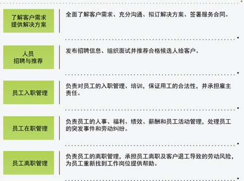
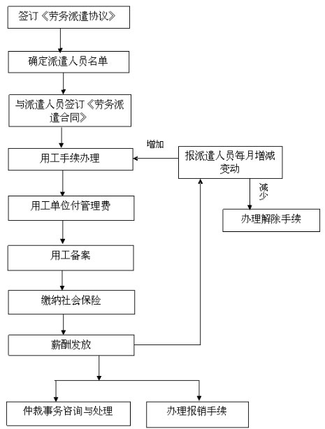
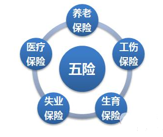

大数据分析
什么是大数据？现在的社会是一个高速发展的社会，科技发达，信息流通，人们之间的交流越来越密切，生活也越来越方便，大数据就是这个高科技时代的产物，随着云时代的来临，大数据（Big data）也吸引了越来越多的关注。大数据（Big data）通常用来形容一个公司创造的大量非结构化和半结构化数据，这些数据在下载到关系型数据库用于分析时会花费过多时间和金钱。大数据分析常和云计算联系到一起，因为实时的大型数据集分析需要像MapReduce一样的框架来向数十、数百或甚至数千的电脑分配工作。在现今的社会，大数据的应用越来越彰显他的优势，它占领的领域也越来越大，电子商务、O2O、物流配送等，各种利用大数据进行发展的领域正在协助企业不断地发展新业务，创新运营模式。有了大数据这个概念，对于消费者行为的判断，产品销售量的预测，精确的营销范围以及存货的补给已经得到全面的改善与优化。它指的是大量、高速、多变的信息，它需要新型的处理方式去促成更强的决策能力、洞察力与最佳化处理。大数据为企业获得更为深刻、全面的洞察能力提供了前所未有的空间与潜力。

大数据分析是指对规模巨大的数据进行分析。十年前，葛大爷曾说过，“21世纪什么最贵?”——“人才”，深以为然。只是，十年后的今天，大数据时代带来了身价不断翻番的各种数据，也提升了快速获取人才的新型方式。我们可针对不同行为特征的客户进行针对性人才推荐。 在人员招聘上我们有独到的优势。我们全国范围内均有招聘团队，并且搜骥与智联招聘、58同城、前程无忧、中华英才网等互联网招聘企业达成战略合作，借助大数据及相关技术再辅以其它方法能够为您提供充足而又优质的各项人力资源。在提供服务的方式上，我们遵守服务第一的理念。以我们诚“专业、高效、诚信、共赢”的服务，让您能放心、省心、省力、省钱，以便您能腾出时间和精力专注于您的核心事业。

对待派遣员工我们会以人为本，尊重人、关心人、激励人、培养人，珍视员工的每个创意，为每位员工提供实现自我价值的平台。我们从不向求职者收取任何费用，即使是用工单位的合理押金也由我公司垫付。只有派遣员工的思想稳定、工作积极，才能有高效率的劳务用工。因此在对待派遣员工这个问题上，我们把它放在了认识的首位。在服务价格方面，在遵循市场惯例的基础上双方协商，使得合作长久发展，为您提供满意的服务是合作的基础。合作从沟通开始，只要您有这方面的需求请致电我们，我们会按用工要求并根据自身能力提交方案供您选择。
岗位外包
岗位外包服务，是企事业单位将某个岗位的所有人力资源工作完全外包给第三方人力资源服务机构，而企业自身只需要用人以及集中精力进行业务管理。通过岗位外包服务，企业将该岗位的招聘、职业化培训、薪酬设计与核算发放、个税申报、社保缴纳与理赔、绩效设计与奖惩执行、各类人事事务工作等完全外包给第三方人力资源服务机构，并且管理劳动关系、处理劳动纠纷以及承担劳动用工可能带来的经济补偿金等也选择性由人力资源机构承担，企业享受的是完全的和深度的人力资源服务。
岗位外包服务重在对外包人员和岗位要求的专业理解和把握，为客户项目的整体运营提供强有力的服务支持。
我们擅长的领域如下：前台文员、导医台、迎宾接待员、活动礼仪、模特、促销营业员、司机、保安、保洁、坐席代表等等。
服务价值
*全面满足客户岗位管理或项目管理中的弹性用人的需求。
*专业且充分理解客户的岗位需求，及时派遣稳定合适的人员到岗，节省客户时间和经济成本，保障客户集中精力管理业务，保障项目的整体实施和顺利进展，从而大大提高业绩产出。
*提供基本工作技能和工作知识的长期培训服务，确保外包岗位的员工能够保质保量完成客户方的工作。
*与客户一起进行研究岗位或项目的绩效管理和激励方案和措施，协助或主导绩效管理和激励的实施，推动持续提高岗位或项目的工作绩效。
*解决客户对于流动性比较大、管理难度比较大的岗位以及大量临时性、项目性人员的用工需求，从而简化客户的用工程序、减少人员管理成本。
*劳动关系转移，使客户可以共享搜骥劳动关系管理经验，摆脱日益复杂的劳动关系预防管理以及处理劳动纠纷的专业工作。
薪酬服务
用人单位按月将劳务费用和服务费用通过银行转账支付搜骥。由搜骥通过用人单位提供的工资表进行工资的足额发放。同时对产生的个税进行足额进行申报。通过代发工资。用人单位解除了工资事物的繁琐，将更多经理放到主营业务上。
服务内容
*根据客户提供的工资数据，编制当月工资计算及汇总表；
*在客户指定工资发放日前将工资代发至员工指定工资账户；
*制作多种版式的保密纸质工资单或电子工资单；
*员工工资信息网上自助查询，历史数据网上管理；
*依据客户要求，提供灵活的工资管理明细报表；
*依据客户财务制度提供行政费用报销服务；
为什么企业要找人力资源公司代发工资？
一：减少企业社保汇算清缴的工资额度，从而减少汇算清缴费用。
二：代发工资后搜骥人力资源有限公司开具的正规劳务费发票，可以作为企业费用申报，这样可以减少企业所得税额。
招聘外包
招聘外包服务可以提供招聘流程中的全面解决方案，即整合所有招聘渠道，为客户提供一揽子招聘服务。尤其当企业有大批量招聘需求，职位分布广泛，项目时间紧而企业内部招聘人员短缺时，招聘外包是最佳的解决方案。
招聘方式的选择：
1、校园招聘
2、现场招聘
3、网络招聘
4、中高级人才推荐咨询——猎头。
5、平面媒体招聘
招聘外包服务细则：
1、帮助企业选择有效媒体，投放网络及报纸招聘广告。
2、简历统一收集、筛选。
3、部分职位提供主动访寻服务。
4、面试。
5、撰写候选人报告。
6、协调安排候选人到企业方的面试。
7、候选人入职前的背景调查。
8、帮助企业与候选人进行薪资谈判。
劳务派遣
劳务派遣，亦称劳务派遣、人才派遣，这一用人方式最早起源于美国，风行日本和欧美。劳务派遣是指在《劳动法》和其它相关法规的框架下，基于市场经济条件，派遣公司根据用人单位的需要，选择合适的人才，并与其签订劳动合同，将劳务派遣到用人单位工作的一种新型用人机制。其特征是用人不养人，与被聘人才不存在隶属关系。它的特点是劳务派遣企业“招人不用人”，用人单位“不招人用人”，这种招聘和用人相分离的用人模式，是国际上十分流行的用工形式。随着我国改革开放的不断深化、社会劳动保障制度的完善以及新一代求职者就业观念的变化，劳务派遣开始在不同层次的劳动力市场、人才市场得到发展。并顺应着这种国际化的趋势成为今后劳动力市场不断成熟完善的用工模式。劳务派遣是一种全新的用人模式，概括地说，劳务派遣机构根据用人单位的用人需要，提供符合用人单位所需人员并派遣到用人单位工作。用人单位“只用人、不雇人”，派遣机构“只雇人、不用人”。被派遣人员在派遣期间的薪酬和社会保险等费用由用人单位拨付，派遣机构负责支付和缴纳。派遣机构与用人单位是劳务协作关系，与被派遣人员是劳动合同关系，用人单位与被派遣人员是使用与被使用关系。
劳务派遣的具体形式有以下几种：
一、完全派遣
由派遣公司承担一整套员工派遣服务工作，包括人才招募、选拔、培训、绩效评价、报酬和福利、安全和健康等。
二、转移派遣
有劳务派遣需要的企业自行招募、选拔、培训人员，再由派遣公司与员工签订《劳动合同》，并由派遣公司负责员工的报酬、福利、绩效评估、处理劳动纠纷等事务。
三、减员派遣
减员派遣指企业对自行招募或者已雇佣的员工，将其雇主身份转移至派遣公司。企业支付派遣公司员工派遣费用，由派遣公司代付所有可能发生的费用，包括工资、资金、福利、各类社保基金以及承担所有雇主应承担的社会和法律责任。其目的是减少企业固定员工，增强企业面对风险时候的组织应变能力和人力资源的弹性。
四、试用派遣
这是一种新的派遣方式，用人单位在试用期间将新员工转至派遣公司，然后以派遣的形式试用，其目的是使用人单位在准确选才方面更具保障，免去了由于选拔和测试时产生的误差风险，有效降低了人事成本。
五、短期派遣
用人单位与劳务派遣机构共同约定一个时间段来聘用和落实被派遣的人才
六、项目派遣
企事业单位为了一个生产或科研项目而专业聘用相关的专业技术人才。
劳务派遣的优势
一、降低用人成本支出：用人单位在核算派遣人员的总支出时，一是考虑岗位效益。二是以市场价格制定工资标准。三是不需要为被派遣人员额外支付其它计划外的费用。劳务派遣专用发票可计入用人单位税前成本开支，综合核算单位支出成本比在编员工的支出大大降低。
二、人事管理便捷专业：用人单位用人不受户口及学历限制，平时对派遣员工做出相关的管理规定，使用其才能，按分配的工作任务进行管理、考核。用人单位可以在业务增加时增加人员，在业务减少时减少人员，用人方式十分机动灵活。
三、减少劳动纠纷：在我国相关法律、法规和有关政策指导下，用人单位和派遣单位签订派遣服务协议，派遣单位与派遣员工签订劳动（聘用）合同，用人单位与派遣员工只是一种有偿使用关系。这样用人单位就可避免与派遣员工在人事（劳动）关系上可能出现的纠纷。
四、解决了用工单位人员的劳动合同问题：当劳务人员因违反规定解除、终止劳务关系等后期工作均由劳务派遣机构处理。避免了用工单位与劳务人员间的劳动争议。
五、缴纳社会保险优势:派遣机构有很多合作安置渠道，在安置工人和招工等方面有诸多优势，英伦劳务服务有限公司可以在全国2个公司所在地选择社保费用缴纳标准最低的地区缴纳。
六、劳务人员的劳动关系在派遣公司:使其办理相关证明手续更加方便快捷，避免不必要的请假。使入、离职时各种人事、保险转移工作更明确。
劳务派遣流程
劳务人员工资如何发放
劳务派遣单位与用工单位之间签订《劳务派遣协议》。
双方约定每月某日前将下月派遣人员社会保险等福利费用拨付给劳务派遣单位。
派遣人员工资、加班加点工资、经济补偿金等法定一次性费用，按实际应付额，届时拨付给劳务派遣单位。有劳务派遣单位支付给派遣人员。
劳务派遣单位与派遣人员签订《劳动合同》。
双方约定，每月某日前以货币或转账形式足额支付派遣人员工资。如遇节假日或休息日，应提前到最近的工作日支付。劳务派遣单位应书面记录支付派遣人员工资的时间、数额、工作天数、签字等情况，并向派遣人员提供工资清单。
劳务人员社会保险如何办理
（1）每月按合同规定的日期，由用人单位支付当月社会保险所需费用；
（2）劳务派遣机构为劳务人员代交各项社会保险费用；
（3）根据劳务人员每月增减情况变化，及时办理人员调入、调出社会保险的转移手续；
（4）符合养老、医疗、失业、工伤应享受的待遇时，办理各项费用的报销手续；
（5）应用人单位要求代交劳务人员住房公积金；
（6）提供各项社会保险的政策咨询及各项社会保险新出台政策的宣传。
培训服务
培训目的是什么？不外乎如下几点：
● 员工培训是培育和形成共同的价值观、增强凝聚力的关键性工作；
● 员工培训是提升员工技术、能力水准，达到人与“事”相匹配的有效途径；
● 员工培训是激励员工工作积极性的重要措施；
● 员工培训是建立学习型组织的最佳手段。
● 现在许多企业都认识到了培训的重要性，都或多或少的进行过培训，但是有时培训后的效果却不近人意，所以有的企业得出培训等于零的结论，其实培训过程中和培训后的措施也是很重要的。
我们的企业人才发展系列培训课程建立在企业人才发展能力素质体系之上，有一套系统化的培训课程加之一套科学化的流程管理控制，以保证培训按客户的实际培训需求出发，按计划进行并纠正培训过程中的偏差，以达到提升并达到最佳的培训效果。
个人档案服务
(1)代为办理档案的商调函
(2)保存、管理人事档案
(3)代开婚姻、计划生育等证明
(4)代办开取有关部门所需的档案介绍信
(5)解决疑难档案：新建档案、死档激活、档案进京、档案补材料
(6)接收零散材料归档
(7)接转党组织关系
(8)员工档案调出介绍信及提出档案服务
什么是社保？
社会保险是指国家为了预防和强制社会多数成员参加的，具有所得重分配功能的非营利性的社会安全制度。 社会保险 (Social Insurance) 是一种为丧失劳动能力、暂时失去劳动岗位或因健康原因造成损失的人口提供收入或补偿的一种社会和经济制度。社会保险计划由政府举办，强制某一群体将其收入的一部分作为社会保险税（费）形成社会保险基金，在满足一定条件的情况下，被保险人可从基金获得固定的收入或损失的补偿，它是一种再分配制度，它的目标是保证物质及劳动力的再生产和社会的稳定。社会保险的主要项目包括养老社会保险、医疗社会保险、失业保险、工伤保险、生育保险。
社保有什么用？
社保可以说是国家为每个公民提供的一种福利制度，简单的说一下社保有以下几方面基本作用：
社保有养老和医疗的保障作用，参加了社保后，当有生育，疾病，失业，工伤风险的时候，可以享受医疗费用的补偿；社保要求累计缴费不低于15年，缴费年限越长，缴费金额越多，则将来领取越多；如果你是在工厂上班，社保缴费单位负责10%，个人负责8%；如果是自由职业者费用全部由个人承担。
养老保险：退休工资
医疗保险：医疗报销，大病统筹
生育保险：女人可以在生产期间费用报销、领取补贴，男人生育结扎、生殖健康等享受费用报销和津贴
失业保险：失业时可拿一定时间的失业救济金
工伤保险：出了工伤时给予补偿
我们的服务
我公司开展面对个人的社会保险代理业务。可接受个人的委托，办理包括：养老、医疗、失业、工伤、生育等社会保险以及住房公积金。可进行社会保险补缴、医疗费用报销、生育费用报销、生育津贴申领以及住房公积金的支取等相关的各类手续。协助您办理工伤认定，工伤保险索赔等工作。公司会与您签订正式的代理协议，并为您建立人事档案。迅速解决您在社保中出现的一切问题。对您的社保问题我们会负责到底。在为您提供放心服务的同时，我们的收费是全市最低。